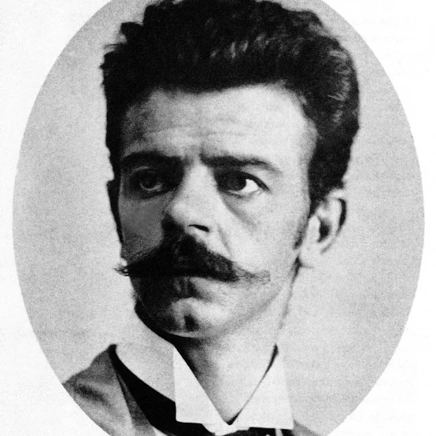
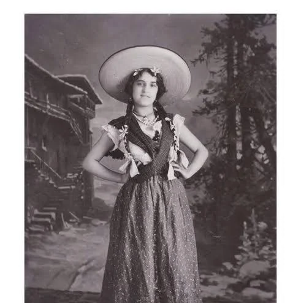
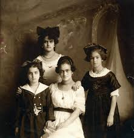
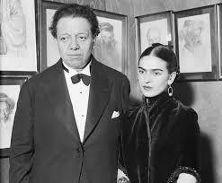

Padres y Hermanas

Guillermo Kahlo
Fotógrafo alemán radicado en México. Transmitió a Frida su amor por el arte y la observación detallada.

Matilde Calderón
Madre de Frida, de ascendencia indígena y española. Su religiosidad y carácter fuerte marcaron la infancia de Frida.

Hermanas Kahlo
Frida tuvo tres hermanas: Matilde, Adriana y Cristina. Esta última tuvo una relación muy cercana y compleja con Frida.
Diego Rivera

Diego Rivera fue el gran amor de Frida, con quien compartió una relación intensa, marcada por la admiración artística, la pasión y los conflictos personales. Se casaron en 1929 y, aunque atravesaron separaciones, siempre mantuvieron un vínculo profundo.
Curiosidades familiares
- El apellido original de su padre era “Kahl”, que luego se castellanizó a “Kahlo”.
- Su madre era profundamente religiosa, mientras que su padre era más liberal y la apoyó en sus inquietudes artísticas.
- Su hermana Cristina fue su gran confidente, aunque también protagonista de una traición sentimental con Diego Rivera.